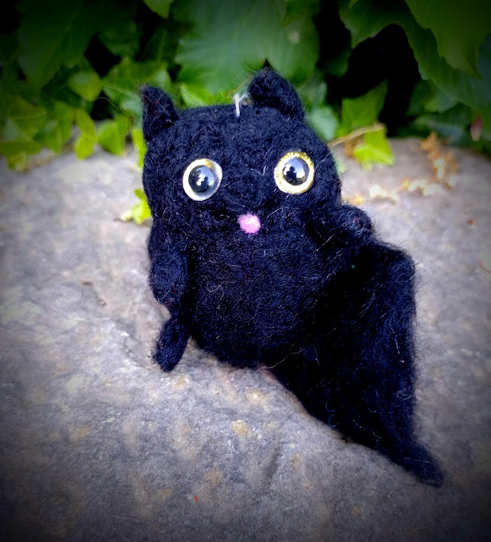
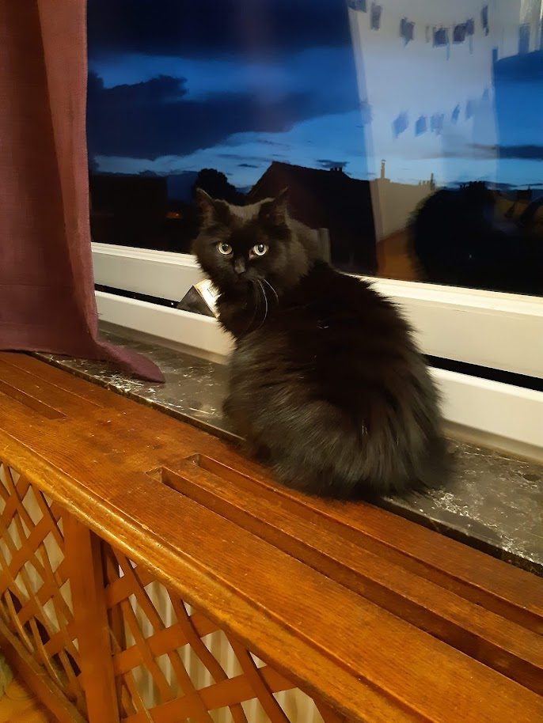
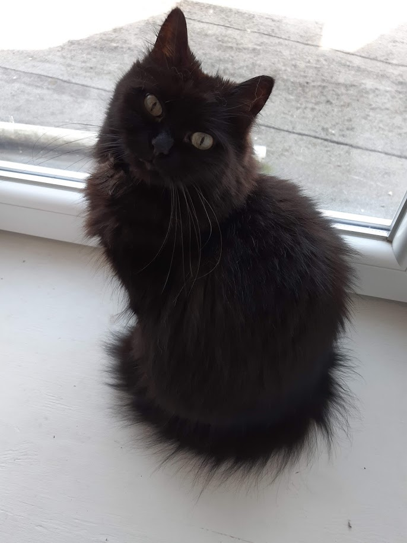
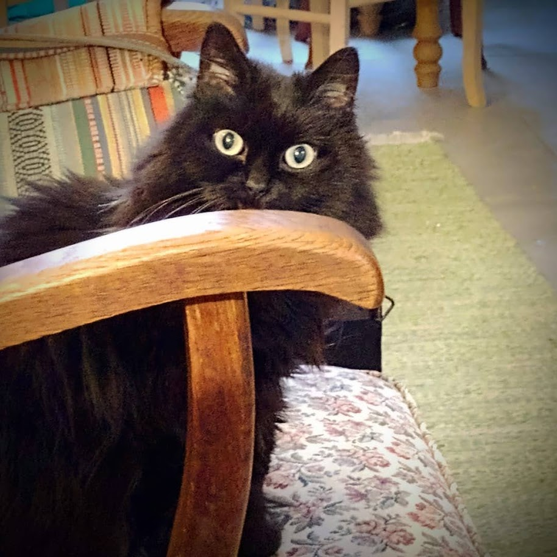
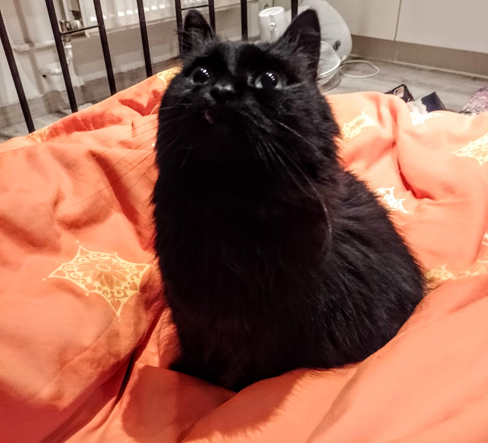
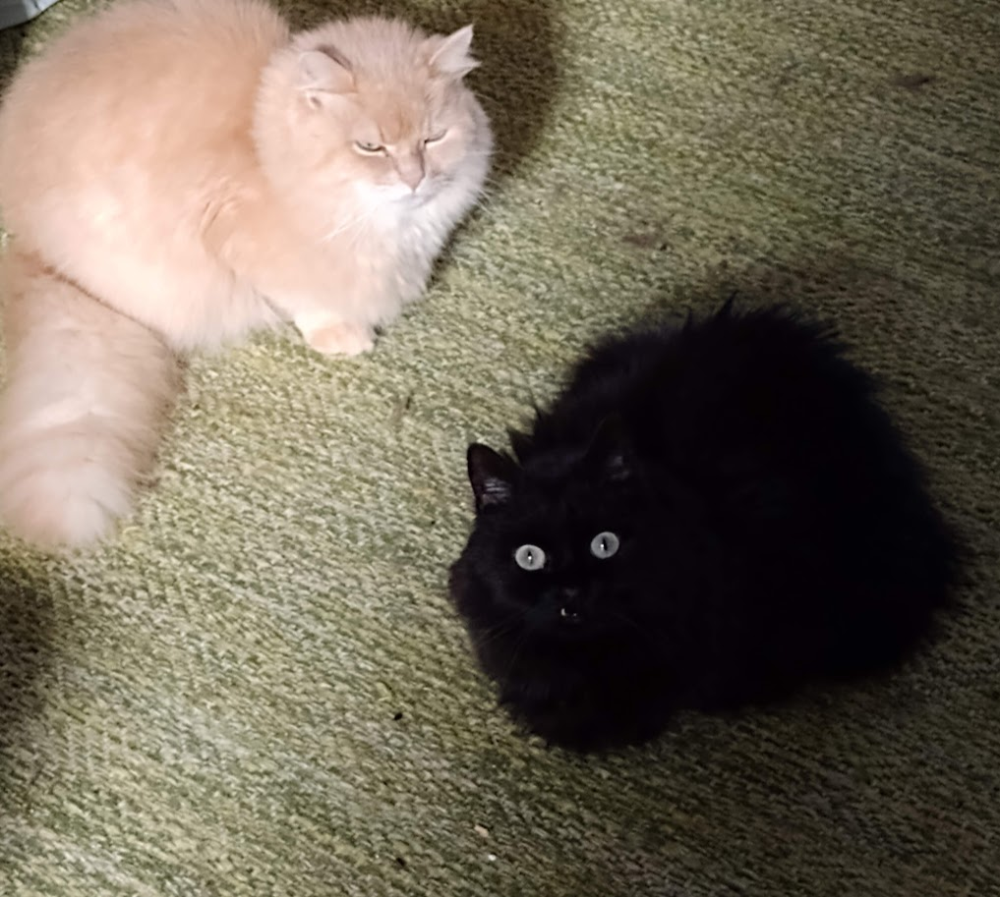
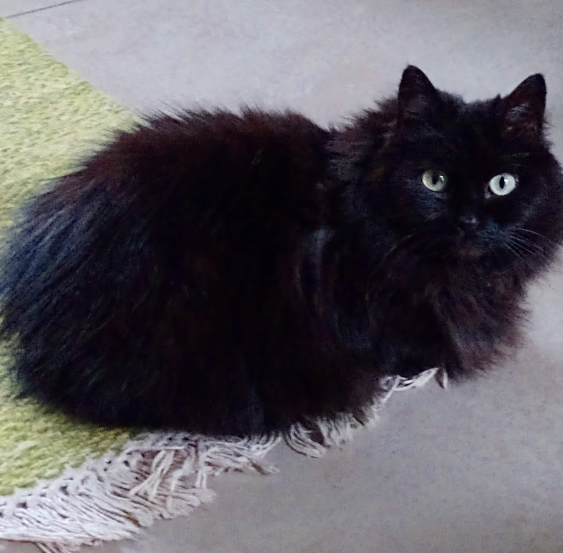

Présentation d'un poticha
Je suis une petite chate trop mignonne (c'est ce que dit ma maman) de sept ans. Mes nouveaux parents m'ont adoptée en refuge. Même si on m'a trouvée dans la rue, je suis apparemment un chat de race ! Ma race est Munchkin. On la décrit comme celle des chats-saucisses, mais je ressemble plutôt à une grosse patate. Ma particularité c'est de ronronner très fort la gueule ouverte et ça fait un bruit de pigeon puissance maximum. Je suis bruyante, quand je veux ! Sinon le reste de la journée je me cache si bien qu'on oublierait que j'existe ! Je peux être très bavarde, quand je veux quelque chose je l'exige en miaulant très fort. Je suis addict aux câlins, surtout sur le bidou, même si les trois-quarts du temps je suis une peureuse. (J'ai très peur des étrangers !) J'ai perdu mes quatre crocs principaux ce qui fait que je m'en donne à coeur joie de "mordre" en mode crocmou ! Et mon papa et ma maman adorent ça! Ah ! Et on m'a dit que je ronfle ! Incroyable ! N'écoutez pas les mauvaises langues 😜
Croquettes que je mange (par ordre de préférence)😻
| Référence | Marque | Prix € |
|---|---|---|
| 1 | Royal canin | 35 |
| 2 | Purina One | 30 |
| 3 | Hill's Diet | 38 |
| 4 | Virbac | 45 |

Maman a même fait une poupée à mon image !
(si ça c'est pas de l'amour) ♡♡♡
|  |  |  |
|---|---|---|
|  |  |  |
Une vidéo en prime de mon roucoulement... ronronnement magnifique !